Recyclation in Cyprus is not as hard as you may think. It is more the absence of any campaign about recyclation and unawarenes of the public, that stops it from becoming more popular.
How to recycle (except glass)
- Take a special recycling bag for paper and PMD (plastic, metal, drink containers) from your local supermarket
- Put designated waste into seperate bags
- Put the bags out whenever they are full but preferably during the pickup day
- You can find a pickup day for your address on
this map
of cyprus green dot
- That is it! 🙂
What to recycle
PMD
| 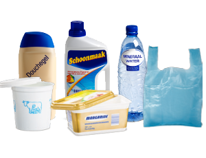 |
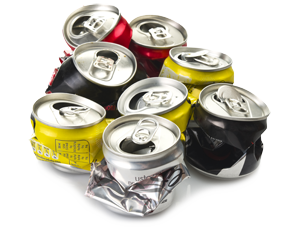 |
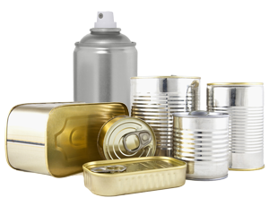 |
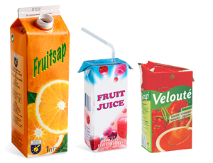 |
| Plastic containers |
Aluminium cans |
Tin cans etc. |
Tetrapak |
Paper
| 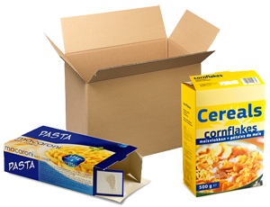 |
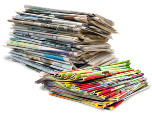 |
| Clean paper packaging |
Magazines, newspaper, etc. |
What not to recycle
PMD
| 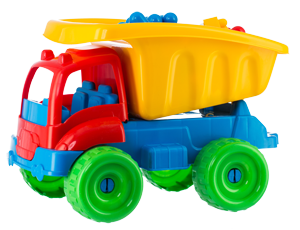 |
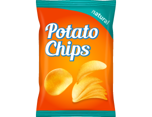 |
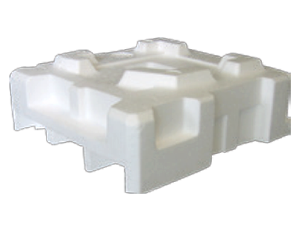 |
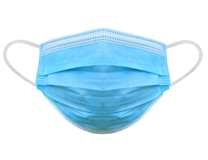 |
| Plastic toys |
Snack packages |
Polystyrene |
Masks |
Paper
| 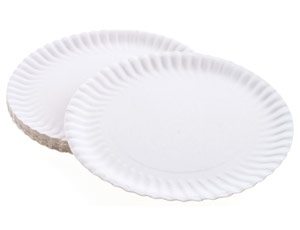 |
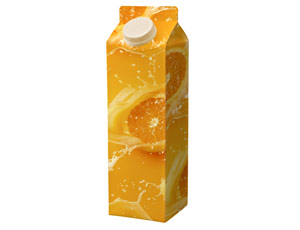 |
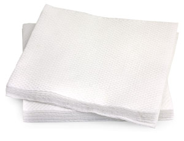 |
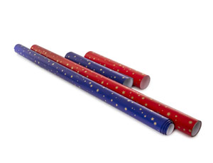 |
| Paperware |
Juice containers |
Napkins |
Wrapping paper |
How to recycle glass
- Find the nearest glass container to your home at
this map
of cyprus green dot
- Take your glass bottles and jars to this container
- That is it, super easy!